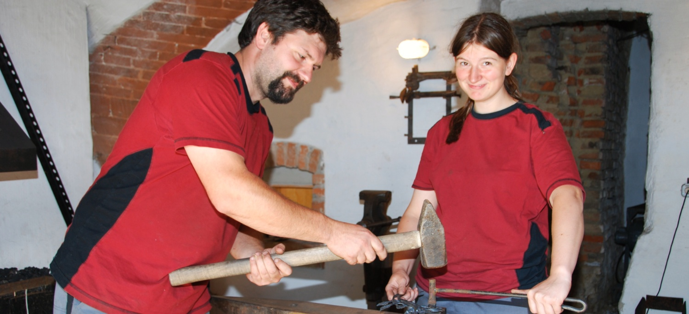

---
layout: shell
title: Über uns
---	
			
		<!-- Main Wrapper -->
			<div id="main-wrapper">
				<div id="main" class="container">
					
					<div class="row">
					
						<!-- Content -->
							<div id="content" class="8u skel-cell-mainContent">
								<article>
									<header>
										<h2>Über uns</h2>
									</header>
									<a href="#" class="image image-full"></a>
									<p>Ausgezeichnet mit der goldenen Verdienstmedaille des bayerischen Handwerks und als 1. Bundessieger im Wettbewerb „Die gute Form – Handwerker gestalten“ fertigt der Meisterbetrieb Johannes Pilz für Sie Schmiedearbeiten, Metallbau- und Schlosserarbeiten.</p>
                                    
                                    <h3>Schmiedehandwerk und Metallgestaltung</h3>
                                    <p>Das Schmiedehandwerk zeichnet sich in allen Epochen durch sein breites Arbeitsspektrum aus. Und seit jeher nutzt der Schmied nicht nur sein technisches, sondern auch sein gestalterisches Können. In unserem Betrieb lebt diese Tradition fort.
Die moderne Metallgestaltung verbindet altes Handwerk mit neuen Herstellungsverfahren.</p>
                                    
                                    <p>So können wir Ihnen eine große Bandbreite an Gestaltungsmög- lichkeiten anbieten: klassisch bis modern, schlicht bis aufwändig, funktional und dekorativ. Metall ist vielseitig, anpassungsfähig und wertbeständig. Mit Metall ist vieles machbar. Davon sollen Ihnen die folgenden Seiten einen Eindruck vermitteln.</p>
									
                                    <h3>Wir planen mit Ihnen!</h3>
									<p>Unsere Arbeit beginnt mit Ihren Vorstellungen und Ideen und der individuellen Planung des Produkts. Gemeinsam mit Ihnen suchen wir konkrete Lösungen, die sich an die architektonischen Gegebenheiten anpassen.</p> 
                                    <p>Details werden in einer
Vorabskizze ausgearbeitet oder in einer dreidimensionalen Computerzeichnung anschaulich gemacht. So erhalten Sie eine genaue Vorstellung vom späteren Ergebnis und können Ihre Wünsche während der gesamten Planungsphase einbringen. </p>
								</article>
							</div>
						<!-- /Content -->
						
						<!-- Sidebar -->
							<div id="sidebar" class="4u">
								<section class="section-padding">
									<header>
										<h2>Metallhandwerk</h2>
									</header>
                                    <ul>
                                    <li>Meisterbetrieb</li>
                                        <li>geprüfter Schweißfachbetrieb</li>
                                        <li>Innungsfachbetrieb</li>
                                        <li>Bundessieger im Wettbewerb „Die gute Form – Handwerker gestalten“ 2001</li>
                                    </ul>
                                    
                                    
								</section>
	
								<section>
									<header>
										<h2>Wir bauen…</h2>
									</header>
									<ul class="style2">
                                       <li>Absturzsicherungen</li> 
                                       <li>Ausleger</li>
                                       <li>Balkone</li>
                                       <li>Briefkästen</li>
                                       <li>Carports</li>
                                       <li>Fahrradständer</li>
                                       <li>Fenster und Fenstergitter</li> 
                                       <li>Geländer</li>
                                       <li>Gitter</li>
                                       <li>Grabkreuze</li>
                                       <li>Handläufe</li>
                                       <li>Laternen</li>
                                       <li>Möbel</li>
                                       <li>Rauchschutztüren</li>
                                       <li>Regale</li>
                                       <li>Restaurierungen</li>
                                       <li>Rosenbögen</li>
                                       <li>Schrammschutz für Mülltonnen</li> 
                                       <li>Terrassen</li>
                                       <li>Tische</li>
                                       <li>Tore</li>
                                       <li>Treppen</li>
                                       <li>Türen</li>
                                       <li>Türschliesser und -schlösser</li>
                                       <li>Vordächer</li>
                                       <li>Vitrinen</li>
                                       <li>Windfahnen</li>
                                       <li>Zäune</li>
                                       <li>und vieles mehr</li>
									</ul>
								</section>
								
							</div>
						<!-- /Sidebar -->
						
					</div>
					
				</div>
			</div>
